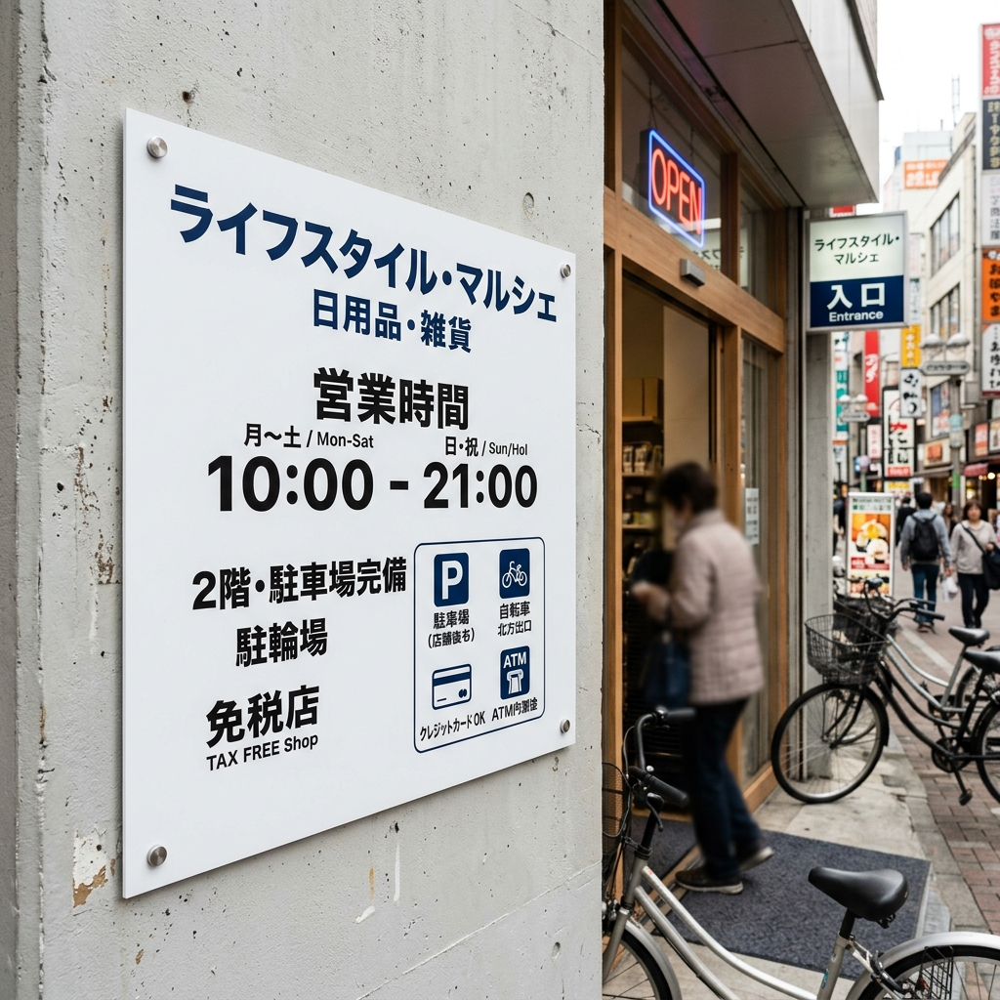

CHINA FACTORY × JAPAN SITE
Twenty years, focused on supply chain certainty.
Kyoken Supply is not a contractor competing for your site. We support material sourcing, production coordination, export packaging, logistics, and arrival confirmation so contractors can focus on their own clients and installation work.
DAILY RECORDS
Today's Supply Chain
A growing record of real work: photos, dimensions, packaging, shipment, arrival, and confirmation. Less advertising, more evidence.
Curtain fabric packing specification checked
Roll packing, labels, outer packaging, and arrival checks were organized.
Acrylic sign size and fixing conditions organized
Logo data, thickness, hole positions, and site substrate were checked.
Material check points after Japan arrival organized
Quantity, outer packing, damage check, and handover conditions were reviewed.
FACTORY SIDE
China Factory
Factories, skilled workers, machines, packing lines, warehouses. We look beyond price and check whether materials can be made, packed, shipped, and received reliably.
JAPAN SITE
Site Records
Not construction cases. These are records of materials landing at Japanese sites: measurements, delivery, damage check, pre-installation confirmation, and handover.
PROCESS
Supply Chain Timeline
ROLE BOUNDARY
Contractor Partnership
Kyoken does not take your construction clients. We support procurement, transportation, delivery, and confirmation; contractors remain responsible for installation, site work, pricing, and customer relationships.
Contractor PartnershipMATERIAL RANGE
Product Categories

Custom Curtains
Factory source / packaging / delivery / site confirmation
Curtain materials checked by pleat ratio, measurement, simple installation, and window conditions.
Acrylic Sign
Factory source / packaging / delivery / site confirmation
Indoor signage checked by logo data, thickness, fixing method, and site substrate.
Lightbox Film
Factory source / packaging / delivery / site confirmation
Display film checked by design data, existing lightbox size, packaging, and delivery conditions.
PVC Sign
Factory source / packaging / delivery / site confirmation
Small-lot panels for guidance signs, caution notices, parking signs, and temporary displays.
Enamel Panel
Factory source / packaging / delivery / site confirmation
Magnetic enamel panels checked by board specification, packing method, and carrying route.
Acoustic Panel
Factory source / packaging / delivery / site confirmation
Acoustic materials checked by color, thickness, substrate, quantity, and fixing method.
Wallpaper / Wall Covering
Factory source / packaging / delivery / site confirmation
Wallpaper and wall covering materials checked by pattern data, wall size, roll packing, and installation conditions.
Outdoor WPC Decking
Factory source / packaging / delivery / site confirmation
Outdoor decking checked by carrying route, substrate, quantity, and long-material packaging.Send drawings, photos, dimensions
We help reduce uncertainty around materials, packaging, delivery, and site coordination one item at a time.
Consult via LINE